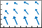

quiver
Quiver or vector plot
- 
Syntax
Description
quiver(
plots arrows with directional components X,Y,U,V)U and V
at the Cartesian coordinates specified by X and
Y. For example, the first arrow originates from the point
X(1) and Y(1), extends horizontally according to
U(1), and extends vertically according to V(1). By
default, the quiver function scales the arrow lengths so that they do
not overlap.
quiver( plots
arrows with directional components specified by U,V)U and
V at equally spaced points.
If
UandVare vectors, then the x-coordinates of the arrows range from 1 to the number of elements inUandV, and the y-coordinates are all 1.If
UandVare matrices, then the x-coordinates of the arrows range from 1 to the number of columns inUandV, and the y-coordinates of the arrows range from 1 to the number of rows inUandV.
quiver(___, adjusts the
length of arrows:scale)
When
scaleis a positive number, thequiverfunction automatically adjusts the lengths of arrows so they do not overlap, then stretches them by a factor ofscale. For example, ascaleof 2 doubles the length of arrows, and ascaleof 0.5 halves the length of arrows.When
scaleis'off'or0, such asquiver(X,Y,U,V,'off'), then automatic scaling is disabled.
quiver(___,
fills the markers specified by LineSpec,'filled')LineSpec.
quiver(___, specifies
quiver properties using one or more name-value pair arguments. For a list of properties,
see Quiver Properties. Specify name-value pair
arguments after all other input arguments. Name-value pair arguments apply to all of the
arrows in the quiver plot.Name,Value)
q = quiver(___) returns a Quiver
object. This object is useful for controlling the properties of the quiver plot after
creating it.
Examples
Load sample data that represents air currents over North America. For this example, select a subset of the data.
load('wind','x','y','u','v') X = x(11:22,11:22,1); Y = y(11:22,11:22,1); U = u(11:22,11:22,1); V = v(11:22,11:22,1);
Create a quiver plot of the subset you selected. The vectors X and Y represent the location of the tail of each arrow, and U and V represent the directional components of each arrow. By default, the quiver function shortens the arrows so they do not overlap. Call axis equal to use equal data unit lengths along each axis. This makes the arrows point in the correct direction.
quiver(X,Y,U,V)
axis equal
By default, the quiver function shortens arrows so they do not overlap. Disable automatic scaling so that arrow lengths are determined entirely by U and V by setting the scale argument to 0.
For instance, create a grid of X and Y values using the meshgrid function. Specify the directional components using these values. Then, create a quiver plot with no automatic scaling.
[X,Y] = meshgrid(0:6,0:6); U = 0.25*X; V = 0.5*Y; quiver(X,Y,U,V,0)

Plot the gradient and contours of the function . Use the quiver function to plot the gradient and the contour function to plot the contours.
First, create a grid of x- and y-values that are equally spaced. Use them to calculate z. Then, find the gradient of z by specifying the spacing between points.
spacing = 0.2; [X,Y] = meshgrid(-2:spacing:2); Z = X.*exp(-X.^2 - Y.^2); [DX,DY] = gradient(Z,spacing);
Display the gradient vectors as a quiver plot. Then, display contour lines in the same axes. Adjust the display so that the gradient vectors appear perpendicular to the contour lines by calling axis equal.
quiver(X,Y,DX,DY) hold on contour(X,Y,Z) axis equal hold off

Create a quiver plot and specify a color for the arrows.
[X,Y] = meshgrid(-pi:pi/8:pi,-pi:pi/8:pi);
U = sin(Y);
V = cos(X);
quiver(X,Y,U,V,'r')
Create a grid of X and Y values and two sets of U and V directional components.
[X,Y] = meshgrid(0:pi/8:pi,-pi:pi/8:pi); U1 = sin(X); V1 = cos(Y); U2 = sin(Y); V2 = cos(X);
Create a tiled layout of plots with two axes, ax1 and ax2. Add a quiver plot and title to each axes. (Before R2019b, use subplot instead of tiledlayout and nexttile.)
tiledlayout(1,2) ax1 = nexttile; quiver(ax1,X,Y,U1,V1) axis equal title(ax1,'Left Plot') ax2 = nexttile; quiver(ax2,X,Y,U2,V2) axis equal title(ax2,'Right Plot')

Create a quiver plot and return the quiver object. Then, remove the arrowheads and add dot markers to the end of each tail.
[X,Y] = meshgrid(-pi:pi/8:pi,-pi:pi/8:pi); U = sin(Y); V = cos(X); q = quiver(X,Y,U,V); q.ShowArrowHead = 'off'; q.Marker = '.';

Input Arguments
x-coordinates of the arrow tails, specified as a scalar, a vector, or a matrix.
If X and Y are vectors and
U and V are matrices, then
quiver expands X and Y
into matrices. In this case, size(U) and size(V)
must equal [length(Y) length(X)]. For more information about
expanding vectors into matrices, see meshgrid.
If X and Y are matrices, then
X,
Y, U, and V must be the same
size.
y-coordinates of the arrows tails, specified as a scalar, a vector, or a matrix.
If X and Y are vectors and
U and V are matrices, then
quiver expands X and Y
into matrices. In this case, size(U) and size(V)
must equal [length(Y) length(X)]. For more information about
expanding vectors into matrices, see meshgrid.
If X and Y are matrices, then
X,
Y, U, and V must be the same
size.
Line style, marker, and color, specified as a character vector or string containing symbols. The symbols can appear in any order. You do not need to specify all three characteristics (line style, marker, and color).
If you specify a marker using LineSpec, then
quiver does not display arrowheads. To specify a marker and
display arrowheads, set the Marker property instead.
Example: '--or' is a red dashed line with circle
markers
| Line Style | Description | Resulting Line |
|---|---|---|
"-" | Solid line |
|
"--" | Dashed line |
|
":" | Dotted line |
|
"-." | Dash-dotted line |
|
| Marker | Description | Resulting Marker |
|---|---|---|
"o" | Circle |
|
"+" | Plus sign |
|
"*" | Asterisk |
|
"." | Point |
|
"x" | Cross |
|
"_" | Horizontal line |
|
"|" | Vertical line |
|
"square" | Square |
|
"diamond" | Diamond |
|
"^" | Upward-pointing triangle |
|
"v" | Downward-pointing triangle |
|
">" | Right-pointing triangle |
|
"<" | Left-pointing triangle |
|
"pentagram" | Pentagram |
|
"hexagram" | Hexagram |
|
| Color Name | Short Name | RGB Triplet | Appearance |
|---|---|---|---|
"red" | "r" | [1 0 0] |
|
"green" | "g" | [0 1 0] |
|
"blue" | "b" | [0 0 1] |
|
"cyan"
| "c" | [0 1 1] |
|
"magenta" | "m" | [1 0 1] |
|
"yellow" | "y" | [1 1 0] |
|
"black" | "k" | [0 0 0] |
|
"white" | "w" | [1 1 1] |
|
Arrow scaling factor, specified as a nonnegative number or 'off'.
By default, the quiver function automatically scales the arrows so
they do not overlap. The quiver function applies the scaling factor
after it automatically scales the arrows.
Specifying scale is the same as setting the
AutoScaleFactor property of the quiver object. For example,
specifying scale as 2 doubles the length of the
arrows. Specifying scale as 0.5 halves the
length of the arrows.
To disable automatic scaling, specify scale as
'off' or 0. When you specify either of these
values, the AutoScale property of the quiver object is set to
'off' and the length of the arrow is determined entirely by
U and V.
Target axes, specified as an Axes object. If you do not specify the
axes, then the quiver function uses the current axes.
Name-Value Arguments
Tips
To create a quiver plot using polar coordinates, first convert them to Cartesian
coordinates using the pol2cart function.
Extended Capabilities
Version History
Introduced before R2006a